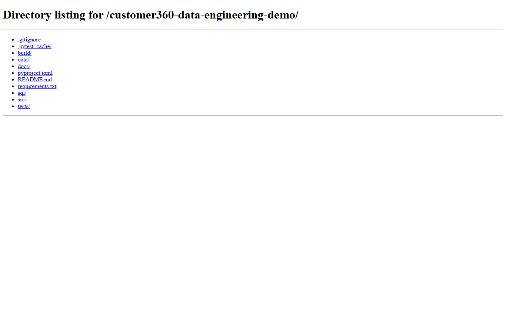
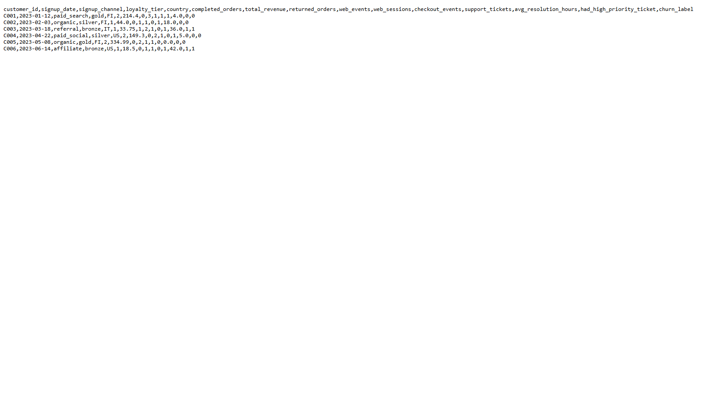
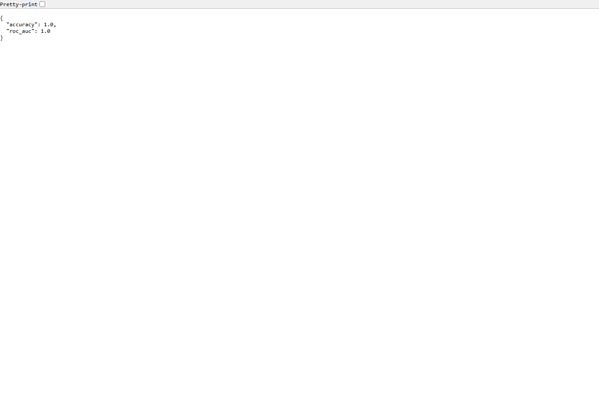
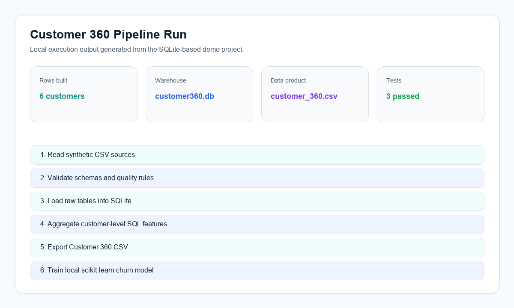
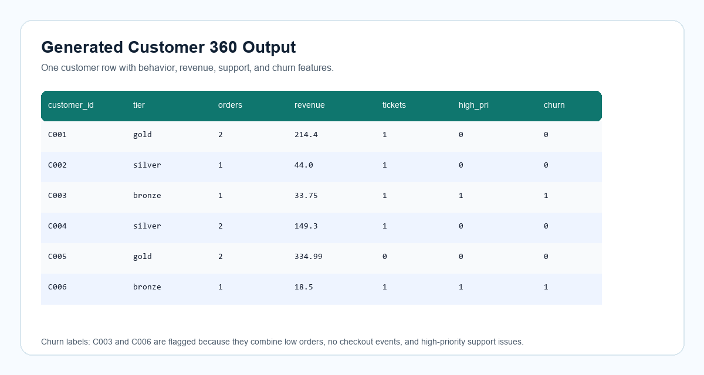
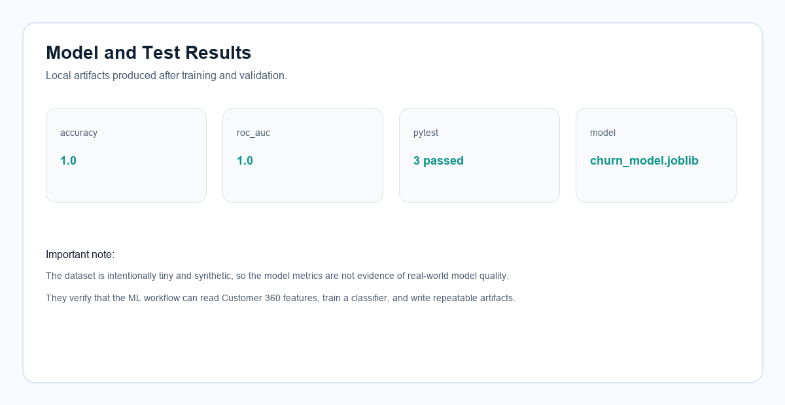

Data assumptions
Each customer has one profile row. Orders, web events, and support tickets can contain multiple rows per customer. The project assumes customer_id is stable across all sources.
Data engineering tutorial project
A local-first project that explains how synthetic retail data moves from raw CSV files into a validated Customer 360 data product, then into a small churn-model workflow.
Why this was made
This project was created as a simple, reviewable portfolio example for data engineering roles. It demonstrates practical fundamentals: reading raw source data, validating schemas, loading a local warehouse, writing SQL transformations, creating a Customer 360 data product, testing the pipeline, and training a small local model from the generated features.
The implementation intentionally uses SQLite instead of a cloud warehouse. That keeps the project honest, runnable on a laptop, and easy for visitors to inspect without credentials or paid services.
Data introduction
The data is synthetic sample data created by ChatGPT for this project. It is not copied from a company, customer system, public dataset, or Kaggle. The files simulate common retail source extracts.
| File | Content | Important fields | Data types |
|---|---|---|---|
customers.csv |
Customer profile and acquisition data | customer_id, signup_channel, loyalty_tier, country |
String, Date |
orders.csv |
Order history with completed and returned orders | order_id, order_amount, status, order_date |
String, Decimal, Date |
web_events.csv |
Website behavior and checkout events | event_type, session_id, event_time |
String, Timestamp |
support_tickets.csv |
Support case history and resolution time | priority, category, resolved_hours |
String, Integer, Date |
Scenario design
The project simulates a small retail company that wants to understand customers across multiple operational systems. In a real company, customer profile data may come from a CRM, order data from an ecommerce platform, web events from analytics tracking, and support tickets from a helpdesk tool. The purpose of this demo is to model that same situation locally with four small CSV files.
The data was prepared as synthetic sample data with deliberate relationships between tables. Every source uses customer_id as the join key, orders include both completed and returned transactions, web events include checkout behavior, and support tickets include priority and resolution time. These fields were chosen because they are realistic signals for a Customer 360 product.
Each customer has one profile row. Orders, web events, and support tickets can contain multiple rows per customer. The project assumes customer_id is stable across all sources.
Completed orders count toward revenue. Returned orders are tracked but excluded from revenue. High-priority support issues and weak checkout behavior are treated as churn-risk signals.
The pipeline should be repeatable, local, and easy to inspect. SQLite is used as the warehouse layer because it supports SQL transformations without external setup.
Working flow
The workflow is deliberately small, but it follows the same mental model as larger data products: source ingestion, quality gates, warehouse loading, transformation, export, and downstream model use.
Tutorial
Start with the buttons for a quick overview, then move into the guided implementation section below. The walkthrough is written as a learning path: each stage explains the idea first, then the files involved, the command to run, the output to expect, and why that step matters in the overall Customer 360 workflow.
Run src/customer360/cli.py with the build command. The CLI creates Customer360Pipeline from src/customer360/pipeline.py, which reads four synthetic CSV files from data/raw/ using pandas.
python -m customer360.cli build --data-dir data/raw --output-dir build
Files used:
- src/customer360/cli.py
- src/customer360/pipeline.py
- data/raw/*.csvBeginner guide
This guide walks through the project as if we are rebuilding it together. The project is intentionally small, so each idea can be seen clearly: first we understand the business need, then we prepare source data, validate inputs, load SQLite, transform with SQL, export a data product, train a small downstream model, and verify the workflow with tests.
Before running commands, it helps to gently map the folder structure in your head. Think of the project as a small workshop: raw data enters from one side, Python and SQL shape it in the middle, and tested output files come out the other side. The files are separated by responsibility so you can trace the workflow without jumping through unrelated code.
data/raw/Stores the four synthetic source CSV files. In a real retail company, these would come from systems such as CRM, ecommerce orders, web analytics, and support tools.
src/customer360/cli.pyCommand-line entrypoint. It gives the reader one clear way to run the pipeline instead of asking them to call internal Python functions manually.
src/customer360/pipeline.pyMain orchestration. It is the “conductor” that reads CSVs, calls validation, loads SQLite, runs SQL, and writes the final CSV.
src/customer360/validation.pySchema and data quality rules. This file protects the project from producing outputs when required columns or values are wrong.
sql/customer_360.sqlSQL transformation layer. This is where raw activity rows become one customer-level record.
src/customer360/ml/train.pyLocal machine-learning workflow. It shows how the Customer 360 output can be reused by another downstream process.
tests/Automated checks. These help a student confirm that each important rule still works after changes.
build/Generated outputs. This folder is the evidence that the project ran successfully.
Each technology is chosen for a teaching reason. The project stays local so the reader can focus on the engineering thinking instead of account setup, credentials, or cloud configuration.
| Stage | Main files | Tech used | Reason | Output |
|---|---|---|---|---|
| CLI run | cli.py | Python argparse | A command-line interface gives one repeatable way to run the work. | Build or validation command starts. |
| Ingestion | pipeline.py, data/raw/*.csv | Python, pandas | Pandas is useful here because CSV data naturally becomes tables. | In-memory DataFrames. |
| Validation | validation.py | Python sets, pandas checks | Simple rules catch common data issues before they affect the output. | Pipeline continues or raises a clear error. |
| Warehouse load | pipeline.py | SQLite, pandas to_sql | SQLite lets us practice SQL warehouse thinking without external setup. | build/customer360.db. |
| Transformation | sql/customer_360.sql | SQL CTEs, joins, aggregations | SQL makes customer-level aggregation easier to read and explain. | customer_360 table. |
| Export | pipeline.py | pandas, CSV | A CSV output lets anyone inspect the final data product quickly. | build/customer_360.csv. |
| Model training | ml/train.py | scikit-learn, joblib | This demonstrates how a data product can support a downstream ML workflow. | churn_model.joblib, model_metrics.json. |
| Testing | tests/*.py | pytest | Tests give the reader confidence that the pipeline still behaves as expected. | 3 passed. |
You can use this table as a progress checklist while learning. After each command, compare your result with the expected output. If something does not match, that is useful feedback: stay at that stage, inspect the file mentioned, and fix the issue before continuing.
| Step | Command or action | File executed | Expected output |
|---|---|---|---|
| Inspect data | Open files in data/raw/ |
No script yet | You should see four CSV files with shared customer_id values. |
| Build pipeline | python -m customer360.cli build --data-dir data/raw --output-dir build |
src/customer360/cli.py |
Terminal prints Customer 360 rows: 6, plus CSV and database paths. |
| Validate export | python -m customer360.cli validate --customer360 build/customer_360.csv |
src/customer360/cli.py and validation.py |
Terminal prints Customer 360 schema validation passed. |
| Train model | python -m customer360.ml.train --input build/customer_360.csv --model-dir build |
src/customer360/ml/train.py |
Terminal prints JSON metrics, and build/churn_model.joblib is created. |
| Run tests | pytest -q |
tests/*.py |
Terminal prints 3 passed. |
We start with the business question because code is only useful when it answers a real need. A Customer 360 table gives analysts one trusted row per customer instead of making them manually combine orders, web activity, and support history.
The project creates a customer-level dataset that answers practical questions: who spends the most, who has support issues, who is active on the website, and who may be at churn risk.
The design begins with a small problem statement, then works backward to the source data needed for that output. In this project, the final output is build/customer_360.csv.
Every pipeline starts with source data. Before writing transformation code, we first slow down and understand what each file represents, because that prevents confusion later.
The project uses four synthetic CSV files: customers.csv, orders.csv, web_events.csv, and support_tickets.csv. Together, they simulate common retail systems.
The files are placed under data/raw/. One stable key, customer_id, connects the sources. This mirrors a real integration task where different systems need a common customer identifier.
customer360-data-engineering-demo/
data/raw/customers.csv
data/raw/orders.csv
data/raw/web_events.csv
data/raw/support_tickets.csvFiles to inspect: data/raw/customers.csv, orders.csv, web_events.csv, and support_tickets.csv.
Thought process: source files stay separate from generated outputs so the pipeline can be rerun from the same raw inputs. This makes the project easier to debug and explain.
Tech used: CSV files because they are simple, portable, and easy for reviewers to open.
Expected output: no generated file yet; the checkpoint is that all four CSV files exist and share the customer_id key.
Ingestion is the moment raw files enter the pipeline. We keep this step small so it has one clear job: read the files and turn them into tables Python can work with.
The pipeline reads each CSV into a pandas DataFrame. The mapping in RAW_TABLES acts like a small contract between file names and table names.
The Customer360Pipeline class reads files from data/raw. If you later add a new source, you can extend the mapping and add validation for the new table.
RAW_TABLES = {
"customers": "customers.csv",
"orders": "orders.csv",
"web_events": "web_events.csv",
"support_tickets": "support_tickets.csv",
}File to run: src/customer360/cli.py through python -m customer360.cli build --data-dir data/raw --output-dir build.
Code path: cli.py creates Customer360Pipeline, then pipeline.py calls _read_sources().
Thought process: the CLI gives a friendly entrypoint, while the pipeline class keeps the logic reusable from tests or other Python code.
Expected output: four pandas DataFrames in memory, one for each raw source table; this step continues automatically into validation during the build command.
Validation is a safety check. If a required column is missing or an order amount is invalid, we want to catch that before building a misleading Customer 360 file.
This project checks required columns, non-negative order amounts, and supported order statuses: completed or returned.
Validation logic lives in src/customer360/validation.py. The file is kept separate so the rules can be tested without running the whole pipeline.
validate_raw_sources(frames)
# Example checks:
# - required columns exist
# - order_amount is non-negative
# - status is completed or returnedFile written for this stage: src/customer360/validation.py.
Thought process: validation is separated from ingestion so the rules can be tested independently with small DataFrames.
File to run: validation runs automatically during python -m customer360.cli build; after building, run python -m customer360.cli validate --customer360 build/customer_360.csv to check the exported file.
Expected output: valid data continues into SQLite; invalid data raises a readable ValueError. The standalone validation command prints Customer 360 schema validation passed.
After reading and checking the data, we need a place where SQL can operate on it. SQLite gives us a real database file while keeping the setup simple and local.
Each DataFrame is written to a SQLite table named after the source: customers, orders, web_events, and support_tickets. This turns CSV files into queryable tables.
The pipeline opens build/customer360.db and uses pandas to_sql to replace the raw tables on each run. Replacing tables keeps the result repeatable when the source data changes.
with sqlite3.connect("build/customer360.db") as conn:
frame.to_sql(table_name, conn, if_exists="replace", index=False)File written for this stage: src/customer360/pipeline.py.
Thought process: SQLite behaves like a real SQL database but runs locally from one file. That lets the tutorial focus on SQL pipeline design instead of infrastructure setup.
File to run: this is part of python -m customer360.cli build --data-dir data/raw --output-dir build.
Expected output: build/customer360.db is created. Inside it, the raw tables are loaded before the final mart table is built.
This is where the raw operational data becomes useful analytics data. The idea is to turn many events, orders, and tickets into one understandable row per customer.
The SQL calculates completed order count, revenue excluding returns, return count, web sessions, checkout events, support ticket count, average resolution time, high-priority support flags, and a simple churn label.
The transformation is written in sql/customer_360.sql. It uses grouped CTEs for each source area, then joins those features back to the customer base table.
CASE
WHEN completed_orders <= 1
AND checkout_events = 0
AND had_high_priority_ticket = 1
THEN 1
ELSE 0
END AS churn_labelFile written for this stage: sql/customer_360.sql.
Code path: pipeline.py calls conn.executescript(...) to run the SQL file against SQLite.
Thought process: SQL keeps aggregation logic readable and close to how a real warehouse mart would be built. The customer table is the base because every final row should represent one customer.
Expected output: a new SQLite table named customer_360 with one row per customer.
A pipeline becomes easier to trust when it produces a clear artifact. Here, the artifact is a CSV that a reader can open and compare against the expected output.
The output file build/customer_360.csv contains one row per customer and 15 fields covering profile, revenue, behavior, support, and churn label.
After SQL creates the customer_360 table, Python reads that table back from SQLite and writes it to CSV in the build/ folder.
customer360 = pd.read_sql_query(
"SELECT * FROM customer_360 ORDER BY customer_id",
conn,
)
customer360.to_csv("build/customer_360.csv", index=False)File written for this stage: src/customer360/pipeline.py.
Thought process: exporting CSV makes the data product visible without special tooling and gives the ML script a simple input.
File to run: python -m customer360.cli build --data-dir data/raw --output-dir build.
Expected output: terminal prints Customer 360 rows: 6, and build/customer_360.csv contains 6 rows and 15 columns.
Many data engineering pipelines do not stop at a table. They feed dashboards, reports, or machine-learning jobs. This step shows that the Customer 360 output can be reused downstream.
The training script reads customer_360.csv, prepares categorical and numeric features, trains a small scikit-learn classifier, and writes model artifacts.
Run the training module after the pipeline build. The output files are build/churn_model.joblib and build/model_metrics.json. The metrics are only a workflow check because the dataset is tiny.
python -m customer360.ml.train \
--input build/customer_360.csv \
--model-dir buildFile to run: src/customer360/ml/train.py through python -m customer360.ml.train --input build/customer_360.csv --model-dir build.
Tech used: scikit-learn ColumnTransformer, OneHotEncoder, RandomForestClassifier, and joblib.
Thought process: the model is intentionally simple because the goal is to demonstrate how a data product feeds ML, not to claim production model quality.
Expected output: terminal prints {"accuracy": 1.0, "roc_auc": 1.0} for this tiny synthetic dataset, and creates build/churn_model.joblib plus build/model_metrics.json.
Tests are the final confidence check. They help a reader see that the project is runnable and that important business rules do not break silently.
The tests check schema validation, end-to-end pipeline output, revenue handling for returned orders, binary churn labels, and model artifact creation.
Run pytest from the project folder. A successful run means the local pipeline, validation, SQL output, and model workflow are working together.
pytest -q
# Expected result:
# 3 passedFiles to run: tests/test_validation.py, tests/test_pipeline.py, and tests/test_train.py through the pytest command.
Thought process: tests help show that the project is not just a static demo; it can rebuild outputs and verify important rules automatically.
Expected output: the terminal shows 3 passed.
Actual project screenshots
These screenshots are captured from the actual local project folder and generated output files, not recreated diagrams.


customer_360.csv file with customer-level revenue, activity, support, and churn fields.
model_metrics.json artifact from the local scikit-learn training step.Supporting visuals
These supporting visuals summarize the same run in a cleaner format for quick scanning.



Findings
C005 generated 334.99 in completed-order revenue.
C003 and C006 were flagged because they had low order counts, no checkout events, and high-priority support issues.
Returned orders are excluded from revenue. For C003, the returned 210.00 order is not counted.
Run it yourself
cd customer360-data-engineering-demo
python -m venv .venv
.\.venv\Scripts\Activate.ps1
pip install -r requirements.txt
python -m customer360.cli build --data-dir data/raw --output-dir build
python -m customer360.ml.train --input build/customer_360.csv --model-dir build
pytest